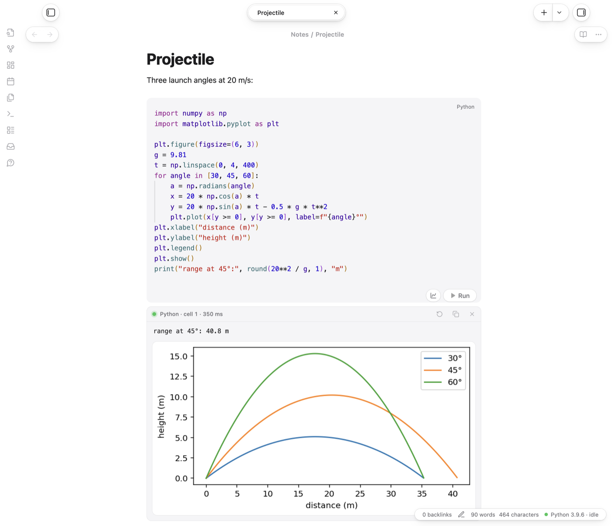
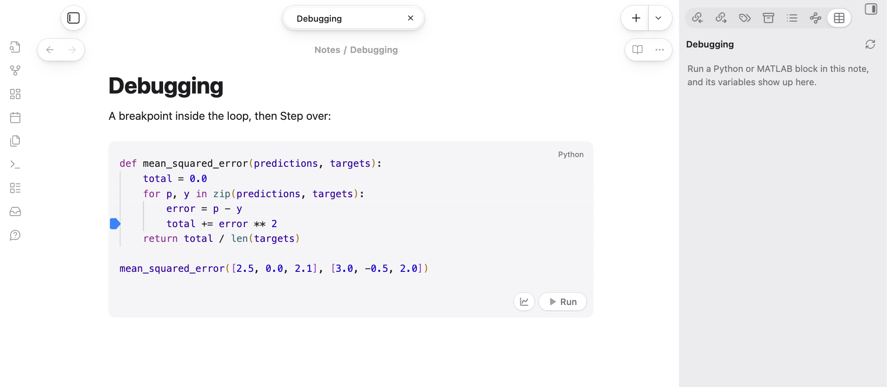

Tahoe Run: code blocks that run inside the note
An Obsidian plugin that runs a note's code blocks in place, with a Python session per note, a debugger, Python on iPhone and iPad through Pyodide, and a test suite that drives the real kernel and real compilers.

What it does
run() in src/main.js sends Python to a long-lived kernel for the note and MATLAB to a long-lived MATLAB session. Everything else (C, C++, Swift and the rest) is written to a fresh temp folder, compiled if needed, and run with the user's own tools.
1. A kernel that shares pipes with the code it runs
A note's kernel is a child process running src/kernel.py, driven from src/kernel.js. The cell's output has to stay intact, including C extensions and subprocesses writing straight to fds 1 and 2, while plugin and kernel exchange structured messages.
The solution is a fourth pipe. kernel.js spawns the process with stdio: ["pipe", "pipe", "pipe", "pipe"]. Commands go in as JSON lines on stdin, and kernel.py sends replies on os.fdopen(3, "w", buffering=1), leaving fds 1 and 2 to the cell. But a done reply on fd 3 can arrive before the last bytes of stdout, so execute() writes a marker framed by U+001E (\x1eTAHOE-DONE:<id>\x1e) to both stdout and stderr, and maybeFinish() in kernel.js only finishes the cell once it has the reply and both markers. If a cell redirected a stream and a marker never comes, a 250 ms grace timer finishes it anyway.
run_cell() compiles each block as <cell N> and registers it in linecache, so tracebacks quote the block's lines. Interrupt sends SIGINT; if the cell is still busy 3 seconds later, the kernel is killed with SIGKILL.
Completions come from jedi. With a kernel running, complete() in kernel.py calls jedi.Interpreter on the live namespace. With none, src/completer.js starts completer.py, which runs jedi.Script over the note's code without executing it, in the note's own environment.
2. A debugger with no extra dependencies

The debugger had to work in any Python environment without installing anything into it, so it is built on the standard library's bdb: class Debugger(bdb.Bdb) in kernel.py.
Breakpoints live in a CodeMirror StateField in src/debug.js, so they move with edits. breakpointsFor() sends them with the run as [{code, lines, current}], one entry per block. Because the kernel keeps every cell's source in CELL_SOURCES, a breakpoint in an earlier block is matched to the most recent <cell N> with that exact code, so a breakpoint inside a function defined in an earlier block still fires when a later block calls it.
Tracing is only switched on for cells that have breakpoints: start_debugger() calls sys.settrace(debugger.trace_dispatch) in run-until-breakpoint mode, and run_cell() clears it when the cell ends. In user_line, frames that are not from a <cell …> file get set_return, so library code is stepped over. When paused, interaction() sends a paused message with the line and stack, then blocks on stdin, answering inspect, complete, variables and table requests against the paused frame's globals and locals until a debug command arrives.
3. Python on iPhone and iPad
Obsidian's mobile app has no Node, so src/node.js only loads Node modules when Platform.isDesktop is true. On a phone, Python runs in Pyodide inside Obsidian (src/pyodide.js), pinned to version 314.0.7.
Nothing is bundled. The five core files are downloaded from jsDelivr on request, and PyodideStore.fetch() refuses to keep any file whose SHA-256 does not match. Core files are checked against CORE_SHA256, packages against the sha256 listed in pyodide-lock.json. Pinning the lock file's own hash is what makes the package checks trustworthy, since their checksums come from it.
Pyodide is told its files live at https://tahoe-pyodide.invalid/, and serve() wraps window.fetch to answer that address from local storage, downloading and verifying a missing package the first time a block imports it.
The phone did not get a second kernel. kernel.py is split so that run_cell() takes a namespace and never touches the pipes; Pyodide loads the same file as a module, and each note gets its own namespace dict in one shared runtime. The cost: cells run on Obsidian's own thread, so a running block can't be stopped, and there is no debugger, since the pause loop waits on stdin.
4. Testing against real processes
Three suites live in tests/:
- Unit (
tests/unit/run.test.cjs, 158 tests, andrich.test.cjs, 9): real sources with stand-ins for Obsidian and the vault. Six cover Pyodide, including rejecting a file with the wrong checksum. - Kernel (
tests/kernel/, 79 tests acrosstest_kernel.pyandtest_rich.py): drivekernel.pyover its real pipes, including stepping into a function defined in an earlier cell. - Runners (
tests/runners/runners.test.cjs, 50 tests): real programs through the plugin's runner. C++ blocks compile withclang++ -std=c++20 -I {dir}, and abits/stdc++.hshim (src/stdcpp.h) is written into that folder because Apple's clang doesn't ship it. Others check that C, C++ and Swift compile errors link to the block's line, and that Stop ends a C program ignoring SIGTERM (kill()follows up with SIGKILL after 1.5 seconds). Languages without installed tools are skipped; on the Mac used here, 39 passed and 11 were skipped.
MATLAB is tested only against a stand-in process, and Pyodide is not tested end to end. Tahoe Run has been used on macOS only.
More write-ups: Refraction in CSS and SVG · AI that stays on the Mac · Shipping seven packages